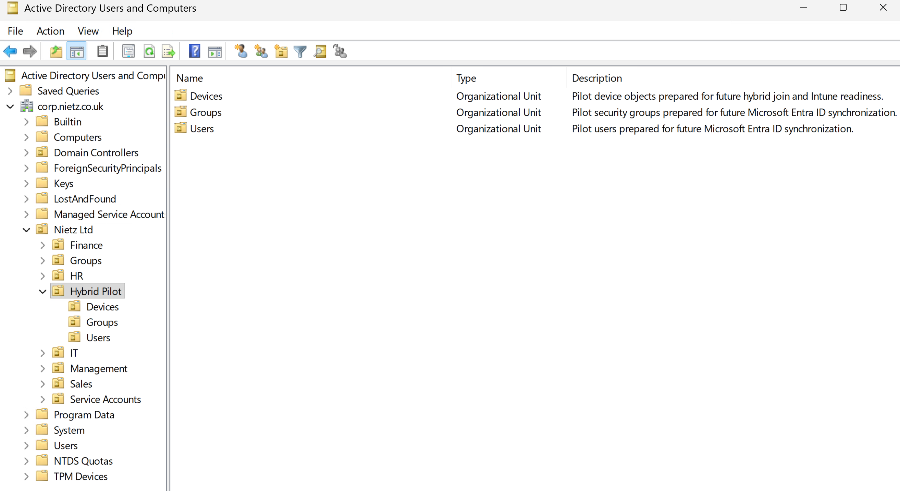
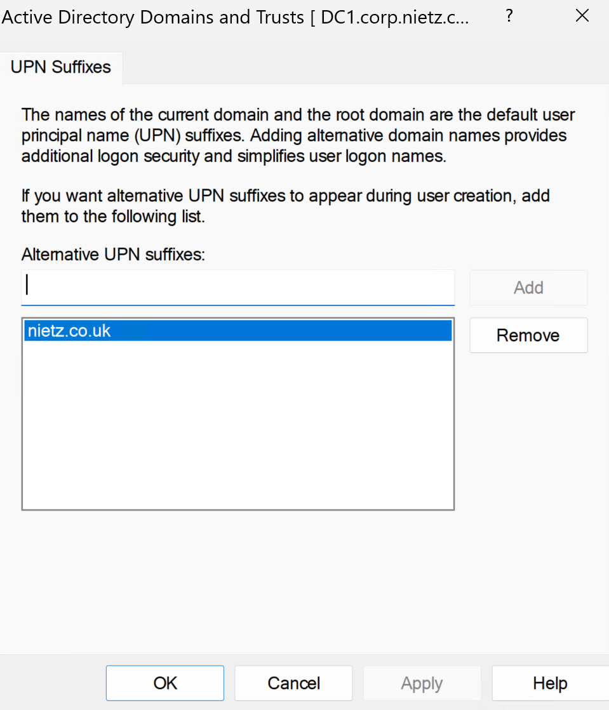
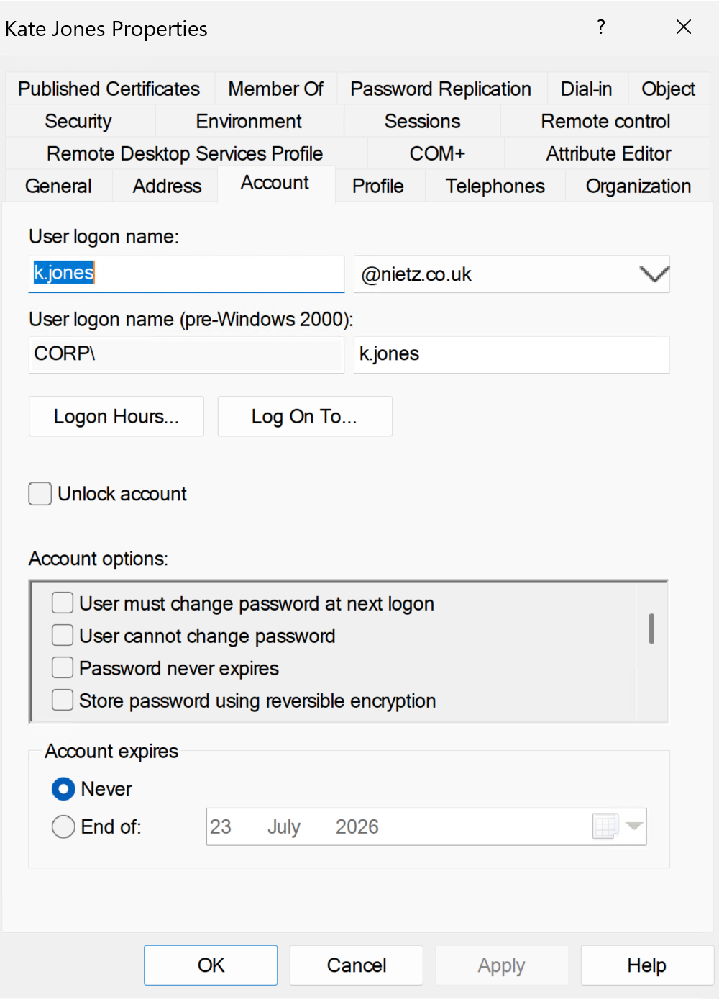
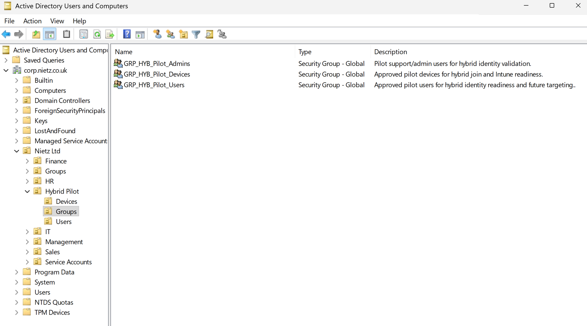
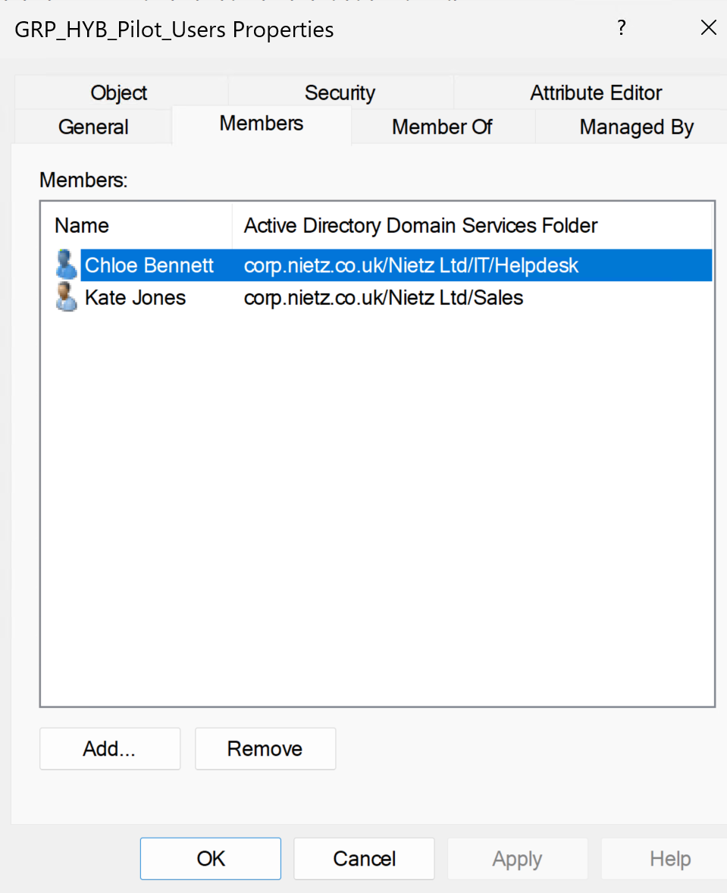
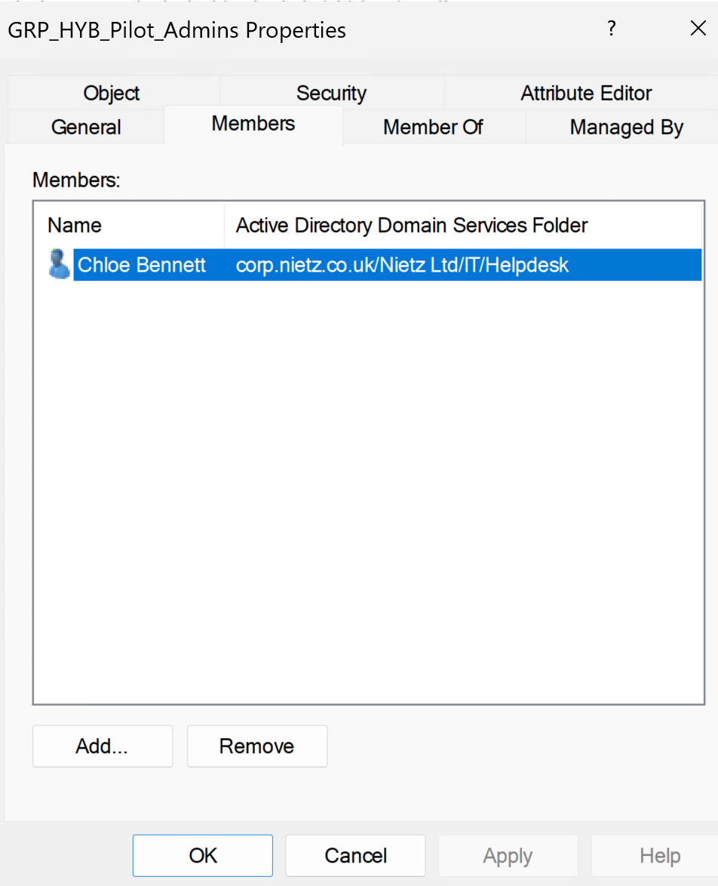

Lab 13: Hybrid Identity Readiness
Prepared Active Directory for a controlled Microsoft Entra hybrid identity pilot by creating a dedicated OU structure, confirming the public UPN suffix, aligning a pilot user's sign-in name and creating governance and targeting groups.
Overview
In this lab, I prepared the Active Directory side of the hybrid identity build before introducing Microsoft Entra Connect or Cloud Sync. The earlier Microsoft 365 and Entra labs established the cloud tenant, user administration model, SSPR pilot and sign-in troubleshooting workflow. This lab created a clean on-premises pilot boundary that can be used safely in the next stage of the hybrid identity rollout.
The work focused on readiness rather than synchronization. I created a dedicated Hybrid Pilot OU structure, confirmed that nietz.co.uk is available as an alternate UPN suffix, checked a pilot user's sign-in name, and created security groups to identify approved user, device and support/admin validation candidates. The Nietz Ltd > Hybrid Pilot OU was documented as the planned technical synchronization boundary for the next lab.
Objective
The objective was to prepare a controlled Active Directory scope for future Microsoft Entra synchronization without changing the whole domain. The pilot groups identify approved users, devices and support/admin validation users for the rollout, while the Nietz Ltd > Hybrid Pilot OU provides the planned technical boundary for scoped Entra Connect synchronization.
Environment
| Component | Value |
|---|---|
| Company | Nietz Ltd |
| Domain controller | DC1 |
| On-premises AD domain | corp.nietz.co.uk |
| Microsoft 365 / Entra domain | nietz.co.uk |
| Pilot OU | Nietz Ltd > Hybrid Pilot |
| Planned LDAP sync scope | OU=Hybrid Pilot,OU=Nietz Ltd,DC=corp,DC=nietz,DC=co,DC=uk |
| Pilot user example | Kate Jones |
| Pilot Service Desk support/admin validation user | Chloe Bennett |
| User pilot group | GRP_HYB_Pilot_Users |
| Device pilot group | GRP_HYB_Pilot_Devices |
| Support/admin validation pilot group | GRP_HYB_Pilot_Admins |
| Previous lab dependency | Lab 12: Entra Sign-In Logs, MFA and SSPR Support |
| Next lab dependency | Lab 14: Hybrid Identity Sync Pilot |
Configuration and Evidence
1. Hybrid Pilot OU Structure Created
I created a dedicated Hybrid Pilot OU under the Nietz Ltd AD structure with separate child OUs for users, groups and devices.

Nietz Ltd > Hybrid Pilot OU structure created with child OUs for pilot groups, users and devices.2. Public UPN Suffix Confirmed
I confirmed that nietz.co.uk is configured as an alternative UPN suffix in Active Directory Domains and Trusts.

nietz.co.uk confirmed as an alternate UPN suffix for user sign-in alignment.3. Pilot User UPN Aligned
I checked Kate Jones' AD account properties and confirmed her user logon name uses the @nietz.co.uk UPN suffix.

k.jones@nietz.co.uk as the AD user logon name.4. Hybrid Pilot Security Groups Created
I created three Global Security groups inside the Nietz Ltd\Hybrid Pilot\Groups OU to represent approved user, device and support/admin validation candidates for later targeting and validation.

Hybrid Pilot OU.5. Pilot User Group Membership Validated
I added Chloe Bennett and Kate Jones to GRP_HYB_Pilot_Users and confirmed the membership from the group properties. This recorded them as approved users for the hybrid identity pilot.

GRP_HYB_Pilot_Users membership showing Chloe Bennett and Kate Jones.Hybrid Pilot OU because OU filtering is used as the Entra Connect synchronization boundary.6. Pilot Support/Admin Group Membership Validated
I added Chloe Bennett to GRP_HYB_Pilot_Admins as the pilot Service Desk support/admin validation user and confirmed the membership from the group properties.

GRP_HYB_Pilot_Admins membership showing Chloe Bennett as the pilot Service Desk support/admin validation user.Validation
The lab was validated when the Hybrid Pilot OU structure existed with dedicated Groups, Users and Devices child OUs, and the nietz.co.uk UPN suffix was confirmed in Active Directory Domains and Trusts.
Readiness was further validated by confirming Kate Jones' UPN alignment, creating the three Global Security pilot groups, and confirming membership for the user and support/admin validation pilot groups. The groups identify approved pilot candidates, while the planned technical sync scope for the next lab is OU=Hybrid Pilot,OU=Nietz Ltd,DC=corp,DC=nietz,DC=co,DC=uk.
Key Technical Outcomes
This lab demonstrated Active Directory preparation for a controlled hybrid identity rollout, including OU design, UPN suffix validation, user sign-in alignment and pilot governance group creation.
It also separated readiness work from synchronization work. The pilot groups document approved users, devices and support/admin validation users, while the next lab can introduce Entra Connect against the known Hybrid Pilot OU boundary.
Summary
- I created a dedicated
Hybrid PilotOU structure under theNietz LtdOU for future hybrid identity testing. - I confirmed
nietz.co.ukas an alternative UPN suffix in Active Directory. - I validated Kate Jones' pilot user UPN as
k.jones@nietz.co.uk. - I created
GRP_HYB_Pilot_Users,GRP_HYB_Pilot_DevicesandGRP_HYB_Pilot_Adminsas Global Security groups for pilot candidate tracking and future targeting. - I added Kate Jones and Chloe Bennett to the pilot users group.
- I added Chloe Bennett to the pilot support/admin validation group.
- I documented that the pilot groups identify approved pilot users and devices, while the
Nietz Ltd > Hybrid PilotOU is the planned technical synchronization boundary for Entra Connect.